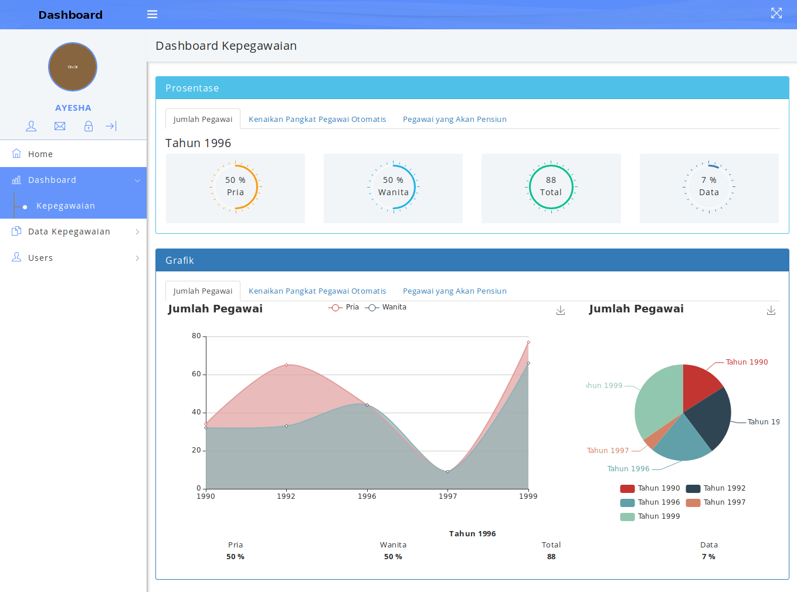
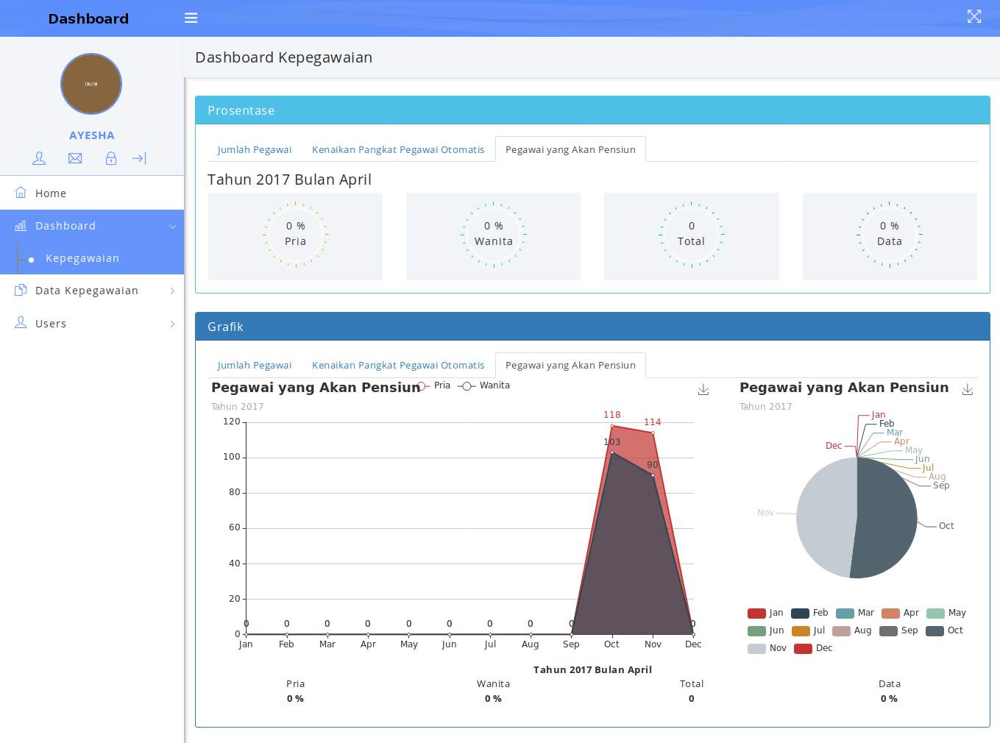
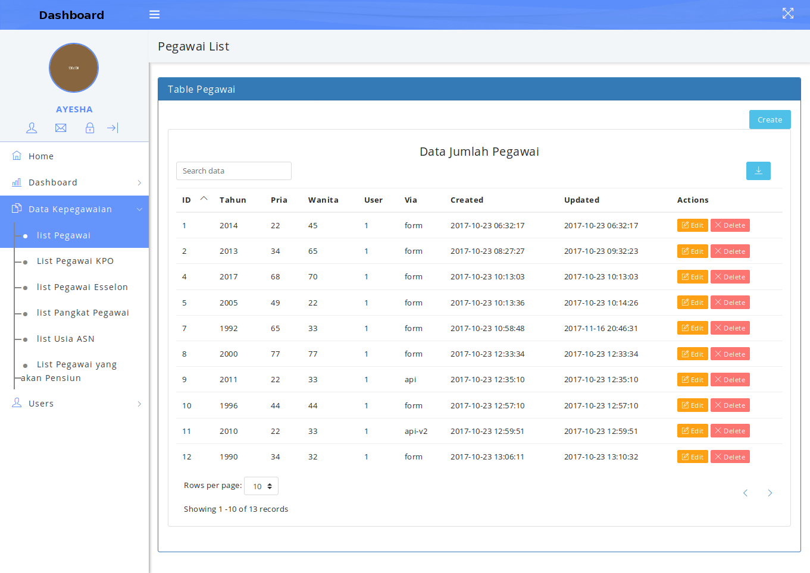
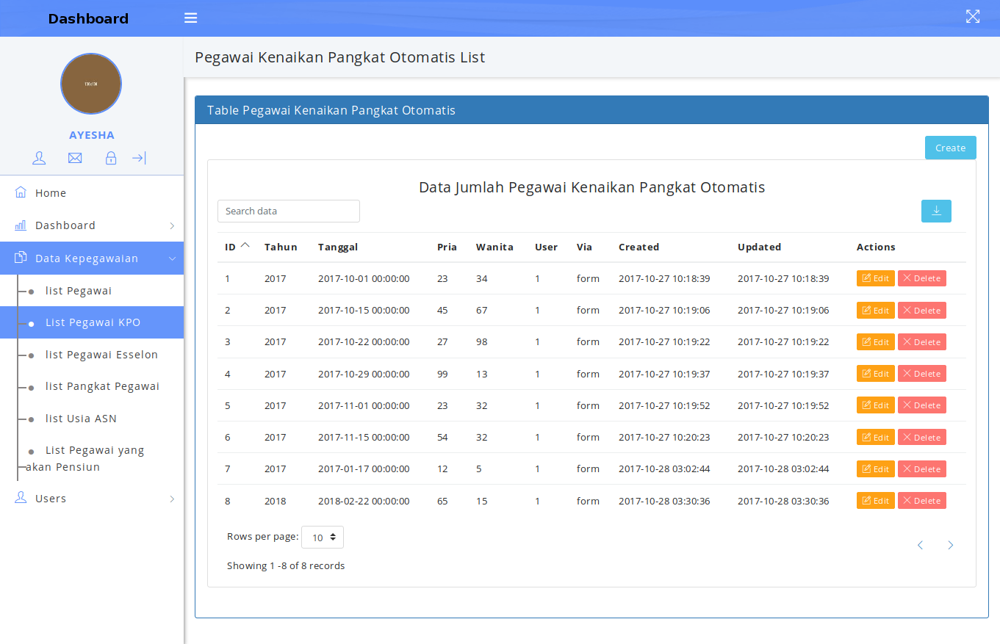
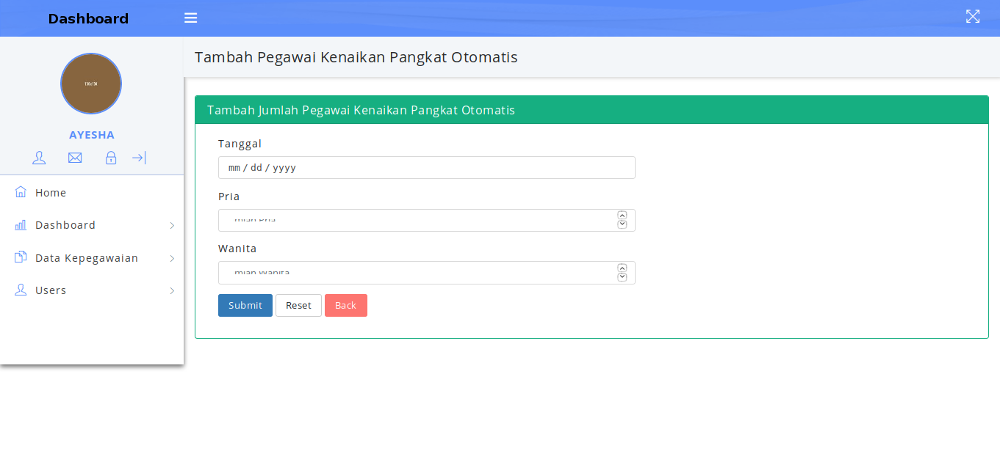
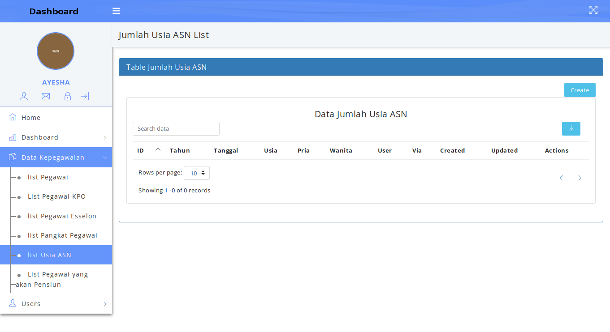
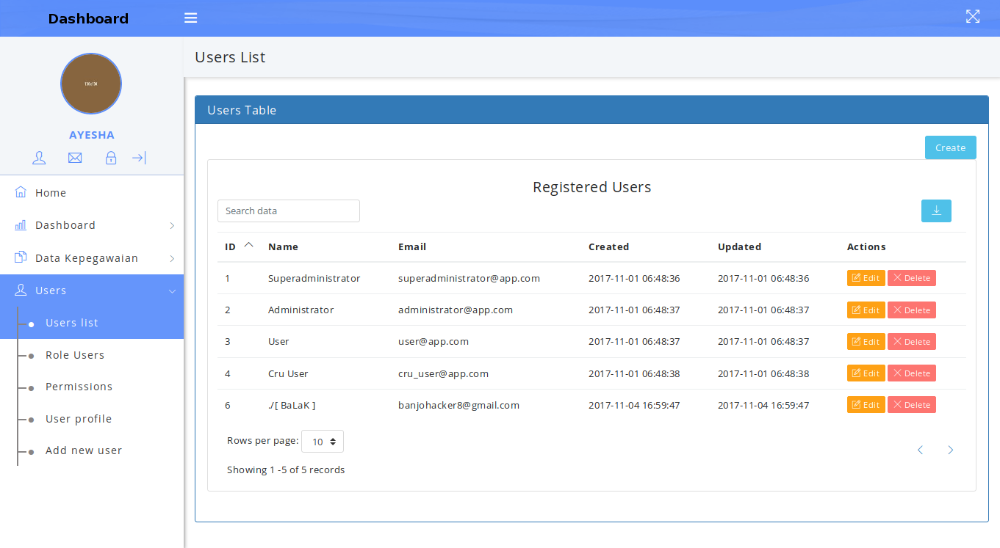
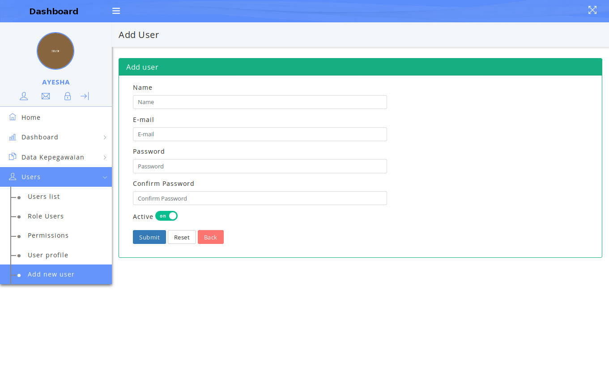
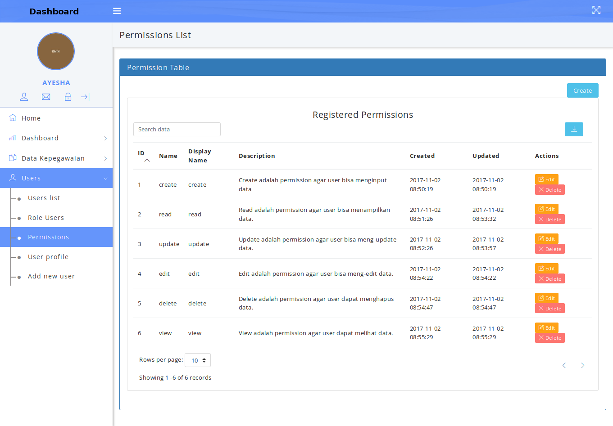

Document manual book ini dibuat untuk memberikan panduan penggunaan aplikasi Dashboard Pimpinan, dimana Aplikasi Dashboar Pimpinan adalah aplikasi antar muka untuk monitoring dan mempermudah Pimpinan untuk melihat dan menilai kinerja SKPD (Satuan Kerja Perangkat Daerah). Perangkat lunak yang di butuhkan untuk pengujian aplikasi adalah Ubuntu 17 sebagai Operasi System. Sumber daya manusia untuk menggunakan aplikasi ini terutama dari Pimpinan dinas Provinsi Banten, penggunaan aplikasi ini terlebih dahulu diberikan pengenalan dan pelatihan yang cukup untuk menggunakan aplikasi Dashboard Pimpinan.
1. Struktur Menu
Adapun struktur menu pada aplikasi Dashboard Pimpinan adalah sebagai berikut:
1.1 Menu Home
1.2 Menu Dashboard
- Kepegawaian
1.3 Menu Data Kepegawaian
- List Pegawai
- List Pegawai KPO
- List Pegawai Esselon
- List Usia ASN
- List Pegawai Yang Akan Pensiun
1.4 Menu Users
- Users List
- Role User
- User Profile
- Permissions
- Add new user
Untuk memulai akses terhadap aplikasi Dashboard Pimpinan. Buka web browser (IE, Mozila Firefox atau yang lainnya) dengan menulis alamat url http://dashboard.bangunbanten.com kemudian tekan Enter pada tombol keyboard atau klik tombol Go pada browser. Akan muncul tampilan halaman login aplikasi dashboard seperti gambar dibawah ini.
{kind=link}
Gambar 1. Tampilan Login
Masukkan User Id dan Password, Setelah di isi lengkap dan benar, klik button Sign in atau tekan tombol Enter pada keyboard. Sehingga akan menampilkan halaman utama sebagai berikut.
 Gambar 2. Tampilan Awal
Gambar 2. Tampilan Awal
2. Menu Home
Halaman muka (home) Dashboard Pimpinan Menampilkan 4 grafik:
- Dashboard Kepegawaian
- Dashboard Kependudukan
- Dashboard Kesehatan
- Dashboard Kependidikan
Seperti ditunjukan pada gambar berikut ini:
Gambar 3. Halaman Utama (Home)
Untuk menampilkan detail dashboard Kepegawaian dengan mengklik tombol view more. maka akan ditampilkan detail grafik Jumlah pegawai, Kenaikan pangkat pegawai otomatis, Pegawai yang akan pensiun.Seperti ditunjukan pada gambar berikut ini:
 Gambar 4. Detail Prosentase dan Grafik Jumlah Pegawai
{kind=link}
Gambar 5. Detail Prosentase dan Grafik Kenaikan Pangkat Pegawai Otomatis
{kind=link}
 Gambar 6. Detail Prosentase dan Grafik Pensiun Pegawai
{kind=link}
3. Menu Dashboard
Didalam menu dashboard ada beberapa cakupan diantaranya Kepegawaian (yang didalamnya mencakup jumlah pegawai, kenaikan pangkat pegawai otomatis, pegawai yang akan pensiun).dengan mengklik tombol kepegawaian sistem aplikasi akan menampilkan seperti ditujukan pada gambar dibawah ini:
Gambar 7.Prosentase dan Grafik Jumlah Pegawai
Gambar 8. Prosentase dan Grafik Kenaikan Pangkat Pegawai Otomatis
Gambar 9. Prosentase dan Grafik Pensiun Pegawai
4. Menu Data Kepegawaian
Menu Data Kepegawaian adalah yang dipergunakan untuk Superadmin dan Admin, dimana bisa untuk Input, Hapus, Edit, Update, View data yang ada diseluruh Dinas Provinsi Banten. Didalam Menu Data Kepegawaian ada beberapa bagian menu, diantaranya adalah dengan tampilan gambar seperti dibawah ini:
List Pegawai  Gambar 10. Data Jumlah Pegawai
{kind=link}
 Gambar 11. Form Tabel Tambah Jumlah Pegawai
Gambar 11. Form Tabel Tambah Jumlah Pegawai
List Pegawai KPO  Gambar 12. List Data Pegawai KPO
{kind=link}
 Gambar 13. Form Tabel Tambah Pegawai KPO
List Pegawai Esselon
 Gambar 14. List Data Jumlah Pegawai Esselon
Gambar 14. List Data Jumlah Pegawai Esselon
 Gambar 15. Form Tabel Tambah Jumlah Pegawai Esselon
Gambar 15. Form Tabel Tambah Jumlah Pegawai Esselon
List Usia ASN  Gambar 16. List Data Jumlah Usia ASN
{kind=link}
 Gambar 17. Form Tabel Tambah Jumlah Usia ASN
Gambar 17. Form Tabel Tambah Jumlah Usia ASN
List Pegawai Yang Akan Pensiun Gambar 18. List Data Jumlah Pegawai Yang Akan Pensiun
{kind=link}
 Gambar 19. Form Tabel Tambah Jumlah Pegawai Yang Akan Pensiun
Gambar 19. Form Tabel Tambah Jumlah Pegawai Yang Akan Pensiun
5. Menu Users
Menu Users adalah tampilan aplikasi yang dipergunakan untuk Superadmin dan Admin, di mana bisa untuk Input, Hapus, Edit, Update, View data yang ada, dengan menekan atau klik tombol create akan tampil form tabel untuk penambahan data. Didalam menu users ada beberapa bagian menu, diantaranya adalah dengan tampilan gambar seperti dibawah ini:
Users List  Gambar 20. List Tabel Admin
{kind=link}
Klik tombol Create sistem aplikasi akan menampilakan gambar di bawah ini
 Gambar 21. Form Tabel Add New User
{kind=link}
Role User
 Gambar 22. List Lore User
Gambar 22. List Lore User
Klik tombol Create, sistem aplikasi akan menampilakan gambar di bawah ini.
 Gambar 23. Form Tabel Add Role User
Gambar 23. Form Tabel Add Role User
Permissions  Gambar 24. List Permissions
{kind=link}
Klik tombol Create, sistem aplikasi akan menampilakan gambar di bawah ini.
 Gambar 25. Form Tabel Add Permissions
Gambar 25. Form Tabel Add Permissions
User Profile

Gambar 26. Profile User